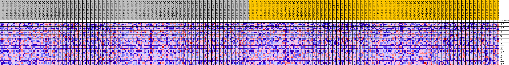
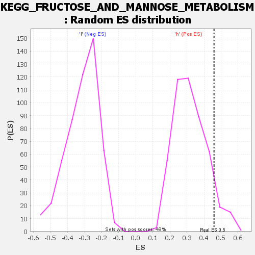

| | | Dataset | VCAN.VCAN.cls#h_versus_l.VCAN.cls#h_versus_l_repos |
| Phenotype | VCAN.cls#h_versus_l_repos |
| Upregulated in class | h |
| GeneSet | KEGG_FRUCTOSE_AND_MANNOSE_METABOLISM |
| Enrichment Score (ES) | 0.45871714 |
| Normalized Enrichment Score (NES) | 1.435642 |
| Nominal p-value | 0.07692308 |
| FDR q-value | 1.0 |
| FWER p-Value | 0.845 |
Table: GSEA Results Summary
 Fig 1: Enrichment plot: KEGG_FRUCTOSE_AND_MANNOSE_METABOLISM
Fig 1: Enrichment plot: KEGG_FRUCTOSE_AND_MANNOSE_METABOLISM
Profile of the Running ES Score & Positions of GeneSet Members on the Rank Ordered List
| SYMBOL | TITLE | RANK IN GENE LIST | RANK METRIC SCORE | RUNNING ES | CORE ENRICHMENT | | 1 | PFKFB3 | na | 1369 | 0.090 | 0.0440 | Yes |
| 2 | PFKP | na | 1439 | 0.089 | 0.1109 | Yes |
| 3 | ALDOC | na | 1845 | 0.083 | 0.1671 | Yes |
| 4 | PFKFB4 | na | 3284 | 0.069 | 0.1939 | Yes |
| 5 | FBP2 | na | 3644 | 0.066 | 0.2381 | Yes |
| 6 | KHK | na | 4887 | 0.057 | 0.2594 | Yes |
| 7 | PFKL | na | 5752 | 0.052 | 0.2834 | Yes |
| 8 | GMDS | na | 8240 | 0.039 | 0.2683 | Yes |
| 9 | FPGT | na | 8284 | 0.039 | 0.2972 | Yes |
| 10 | SORD | na | 8478 | 0.038 | 0.3226 | Yes |
| 11 | TPI1 | na | 8728 | 0.037 | 0.3461 | Yes |
| 12 | MTMR1 | na | 9006 | 0.035 | 0.3681 | Yes |
| 13 | PMM1 | na | 9718 | 0.032 | 0.3799 | Yes |
| 14 | HK3 | na | 10319 | 0.029 | 0.3915 | Yes |
| 15 | HK2 | na | 10491 | 0.029 | 0.4104 | Yes |
| 16 | MPI | na | 11100 | 0.026 | 0.4194 | Yes |
| 17 | FBP1 | na | 11862 | 0.023 | 0.4232 | Yes |
| 18 | AKR1B10 | na | 12722 | 0.020 | 0.4227 | Yes |
| 19 | ALDOA | na | 12790 | 0.019 | 0.4364 | Yes |
| 20 | MTMR7 | na | 13222 | 0.018 | 0.4421 | Yes |
| 21 | GMPPB | na | 13378 | 0.017 | 0.4524 | Yes |
| 22 | AKR1B1 | na | 13706 | 0.016 | 0.4587 | Yes |
| 23 | MTMR2 | na | 16834 | 0.006 | 0.4064 | No |
| 24 | MTMR6 | na | 20881 | -0.000 | 0.3333 | No |
| 25 | PFKM | na | 22925 | -0.005 | 0.3003 | No |
| 26 | PHPT1 | na | 23551 | -0.007 | 0.2943 | No |
| 27 | GMPPA | na | 24079 | -0.008 | 0.2911 | No |
| 28 | HK1 | na | 38220 | -0.047 | 0.0709 | No |
| 29 | ALDOB | na | 42544 | -0.059 | 0.0373 | No |
| 30 | PFKFB2 | na | 46080 | -0.069 | 0.0263 | No |
| 31 | PFKFB1 | na | 47152 | -0.073 | 0.0624 | No |
| 32 | PMM2 | na | 53875 | -0.111 | 0.0252 | No |
Table: GSEA details [plain text format]

Fig 2: KEGG_FRUCTOSE_AND_MANNOSE_METABOLISM
Blue-Pink O' Gram in the Space of the Analyzed GeneSet

Fig 3: KEGG_FRUCTOSE_AND_MANNOSE_METABOLISM: Random ES distribution
Gene set null distribution of ES for KEGG_FRUCTOSE_AND_MANNOSE_METABOLISM